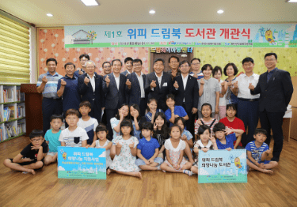

한국서부발전은 신종 코로나바이러스 감염증(코로나19)에 따른 경제위기 속에서도 일자리 창출에 매진했다.
특히 농어촌마을 재생사업, 지역특산품, 장애인 복지, 농어업 중심의 초고령 사회, 교육환경 등 다양한 측면의 지역 니즈를 반영한 특화사업에 중점을 두고 있다.
이를 통해 2020년에는 701개 일자리를 만들어 목표치인 536개의 131% 를 달성했다. 2018년(110%)과 2019년(148%)에 이은 3년 연속 목표 초과 달성이었다. 2020년 창출한 일자리 701개였다. 신입사원 채용 239개, 중소기업 고용환경 개선 통한 일자리 창출 247개, 혁신창업 생태계 조성을 통한 일자리 78개, 포용성장 사회적 일자리 137개 등이었다. 포용성장 사회적 일자리는 장애인과 여성, 노인 등 취약계층을 위한 일자리다.
포용성장 사회적 일자리 중 발달장애 청년의 경제적 자립을 돕기 위해 대안학교인 산돌학교 및 전북 군산농업기술센터와 함께 참여한 군산의 ‘산돌팜’ 조성 사업이 있다. 군산 성산면 3,000㎡부지에 ICT기술을 활용한 스마트팜 1동 건립을 지원했으며, 발달장애인 선발과 영농기술 교육, 시설운영 등을 담당하고 있다.
IMAGE군산 산돌팜에서 처음 수확한 딸기
2021년 4월에는 청각장애 여성들의 직업훈련을 위해 한국서부발전과 충청지역 공공기관들이 마련한 네일케어 사업장 ‘섬섬옥수’를 오픈했다. 대전역 1층 유휴공간에 문을 연 섬섬옥수에서 청각장애 네일아티스트 4명과 지체장애인 관리자 1명이 네일케어와 고객응대 등 직업훈련을 통해 사회경제적 자립화에 나섰다.
IMAGE대전역사에 개소한 청각장애 여성일자리 네일케어 사업장 ‘섬섬옥수＇
CHAPTER10
지역과 함께 만드는 행복한 세상
한국서부발전은 지속가능한 성장 및 지역균형발전의 핵심은 결국 사람에게 있다는 인식 아래, 지역의 미래인재 양성을 위한 여러 가지 교육나눔 활동을 진행하고 있다.
2017년부터 ‘어제의 배움으로 오늘을 나눕니다’라는 슬로건 아래 전국에서 선발된 대학생들이 멘토가 되어 태안지역 초·중·고생들의 학습지도, 진로 등을 멘토링하는 ‘서부공감 위피스쿨’ 사업을 운영하고 있다. 2017년 여름방학에 시작된 1기부터 2020년 1월 21일 마무리된 6기까지 총 124명의 멘토가 1,214명의 멘티에게 꿈과 희망을 심어줬으며, 8월 3일부터 15일까지 진행한 7기는 코로나19에 대응해 비대면으로 실시했다. 서부공감 위피스쿨 사업을 통해 멘토와 멘티 서로의 정서적 교류를 바탕으로 한 교육나눔을 실현했다.
IMAGE2017. 07. 17 / 해피 위피스쿨 클래스 1기 발대식
2018년 8월 6일에는 서부공감 위피 드림북 희망 나눔 도서관 제1호가 개관했다. 서부공감 위피 드림북 희망나눔사업은 다문화가정의 자녀들을 포함한 지역의 저소득 아동, 청소년들이 쾌적하고 안락한 교육환경 속에서 책을 통해 세상의 지식과 지혜를 배우고 미래의 꿈을 키워 나가는 데 일조하고자 추진한 사업이다.

IMAGE2018. 08. 06 / 서부 위피 드림북 희망나눔 도서관 제1호 개관
CHAPTER11
대한민국에서 가장 안전하고 행복한 일터를 위해
2019년 한국서부발전은 안전한 일터 구축을 위해 ‘안전 최우선 경영가치’를 선포했다. 또한 이해관계자에게 안전경영 참여기회를 제공해 다양한 관점에서 현장위험을 발굴 및 개선하고자 ‘WP All Together’ 안전경영체계를 확립했다.
IMAGE2019. 08. 08 / 안전한 일터 구축을 위한 노사 안전보건 워크숍 개최
노사 안전협의체 운영으로 근로자 의견 청취 및 현장 합동점검을 매월 시행하고, ‘경영위기 극복을 위한 노사 공동선언’을 발표하는 한편, 본사와 사업소에서 ‘노사공동 안전 공감 토론회’를 개최하고, 산업안전보건위원회 활동 강화를 통해 국내 최고의 안전 일터 구현에 적극 나서고 있다.
근로자의 안전한 근무환경 조성을 위해 공공기관 최초로 PC, 휴대폰 기반 ‘숨은 위험 찾기’ 온라인 안전교육 콘텐츠를 개발하고, 근로자의 건강을 위한 안전쉼터 운영, 전용 휴게라운지, 샤워실 및 수면실 등의 편의시설을 제공했다.
아울러 ‘마음 톡톡(Talk Talk)’ 심리상담 프로그램을 운영해 직원 및 협력사 직원의 스트레스 경감에도 기여하고 있다.
IMAGE2020. 07 / 근로자 마음건강 증진을 위한 ‘마음톡톡 (Talk Talk)’ 프로그램
또한 4차산업 기술을 활용해 스마트 안전관리 시스템을 구축했다.
2018년 무선통신망(LTE) 구축을 통해 열화상·내시경 진단 앱을 탑재한 스마트 모바일 점검기기 개발, 굴뚝 및 풍력발전기와 같은 고소부에 자율비행 드론과 해수 취수구에는 수중점검 로봇을 이용한 점검 실시, 발전소 내 밀폐공간 및 CCTV 사각지대에서 위험을 선제적으로 감지할 수 있는 휴대용 모니터링 패키지(SMP) 도입, 작업자의 행동을 분석해 위험 여부를 즉각 감지할 수 있는 인공지능 CCTV 영상분석 시스템 도입 등
IMAGE스마트폰을 활용안 안전 점검
전사적 안전 최우선 경영을 실천한 결과, 2019년 재해율을 발전사 최저, 역대 최저 수준인 0.05%로 낮췄고 ‘사망사고 0건 달성’ 및 2018년 대비 2019년 산업재해율 69% 감소 성과를 창출했다.